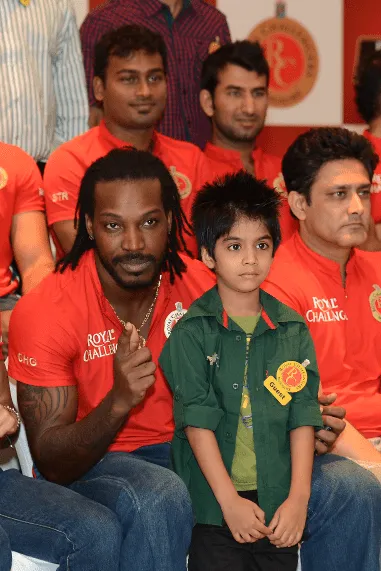
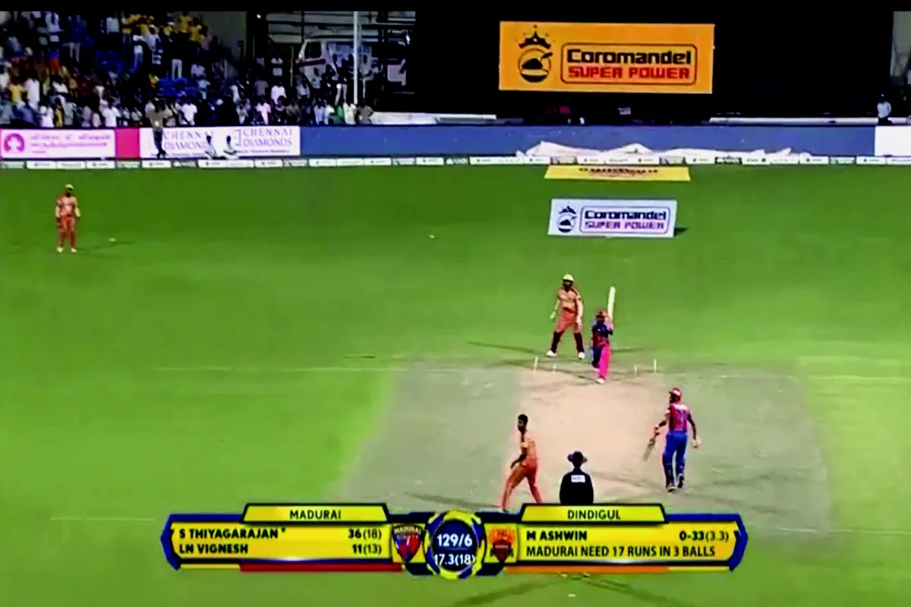
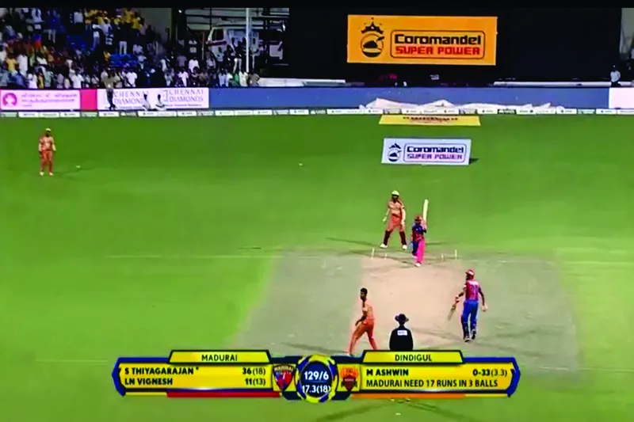
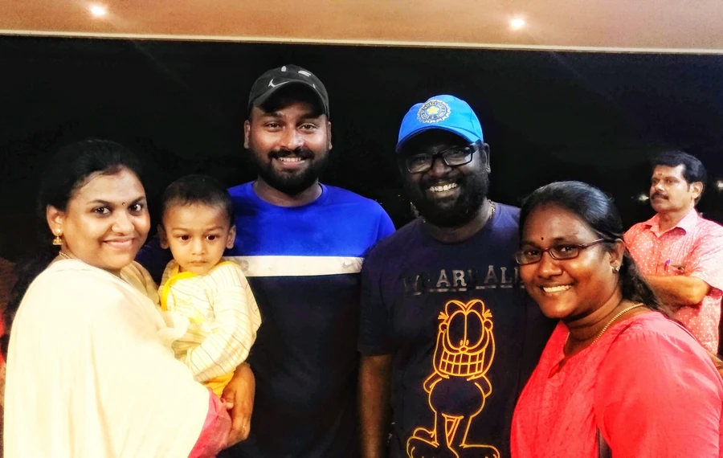
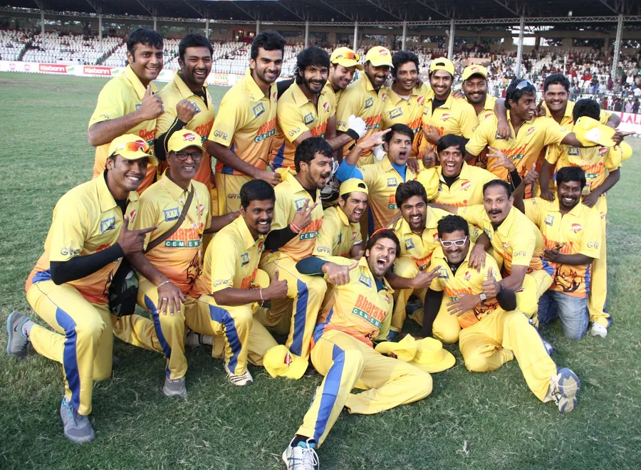
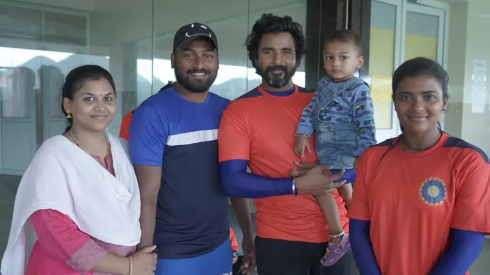

Inside the Ring

An uncapped player's shot at the IPL — five innings in RCB colours that taught him what elite pressure and floodlit cricket actually demand. That standard is what he now brings to the academy nets.
See the galleryWhere It Started


Playing for Madurai Super Giant (now Siechem Madurai Panthers) in the TNPL, then carrying that game across college, corporate, and invitational tournaments — the circuit where the all-rounder's game, and the mentor's instinct, were built side by side.
See the full circuitOn Set, Off Screen

On screen, the cricket in Kaana (2018) is played by Sivakarthikeyan. Off screen, someone still had to get the female lead's batting technique camera-ready. That's where he came in — coaching the actress through the fundamentals so her cricket would hold up on film.
See the setCoach to the Crown

Not a player's spot this time — a coach's and mentor's. In the Celebrity Cricket League, the tournament that puts film stars on a cricket field, he worked the other side of the boundary: sharpening the technique of the side that went on to win.
See the winSix Cities, One Standard


A dozen years of American club and county cricket, across six states — and just as often, coaching the next generation courtside as playing himself. The same coaching eye that built the academy in Chennai, now stamped on cricket communities from Charlotte to the Bay Area.
See the tourFull Circle

RCB nets. TNPL run-chases. A film set in Chennai. Cricket grounds in six American states. Every one of those rooms shaped the coaching philosophy now running through Bowncer Sportz — Process. Progress. Perform.
Step inside the academy